The streets of Heather’s neighborhood in Ahmedabad were alive with the chatter of street vendors and the hum of auto-rickshaws. For Neet, however, it was a battleground waiting to be conquered. As Heather took Neet and Buddy on their daily walk, Neet’s sharp eyes darted left and right, scanning for threats. Buddy, in contrast, ambled along happily, his nose glued to the ground as he sniffed every new scent with delight. He wanted to reach the banyan shade before Neet discovered a reason they couldn’t.
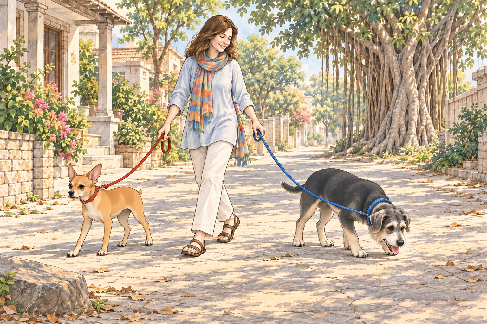
“Stay close, guys,” Heather said, gripping their leashes. But Neet, always on high alert, suddenly froze. Ahead, a group of local stray dogs lounged in the shade of a banyan tree. There were five of them, ranging from a scrappy terrier to a muscular pariah dog. To Neet, they might as well have been an invading army.
With a sharp bark, Neet puffed out his chest and strained against the leash. “Stand down, intruders! This is my turf!” his posture seemed to scream. Heather sighed. “Neet, they’re just relaxing. Let’s not start a war.”
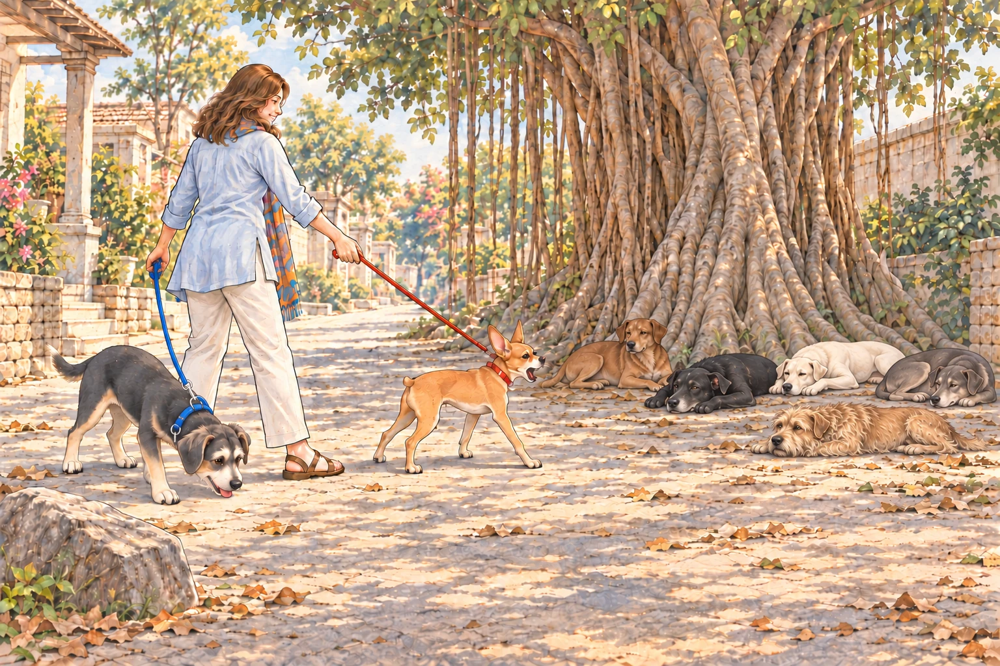
One of the invaders rolled onto his other side.
But Neet wasn’t listening. His barking intensified, drawing the attention of the stray dogs. The largest of the group, a broad-shouldered black dog with a torn ear, stood up and growled. The others followed suit, their eyes narrowing at the tiny orange chihuahua making all the noise.
Buddy whimpered and hid behind Heather, clearly not ready for a confrontation. Heather tugged at Neet’s leash. “Come on, let’s go.” But Neet was relentless, pulling forward as if determined to meet his “enemies” head-on.
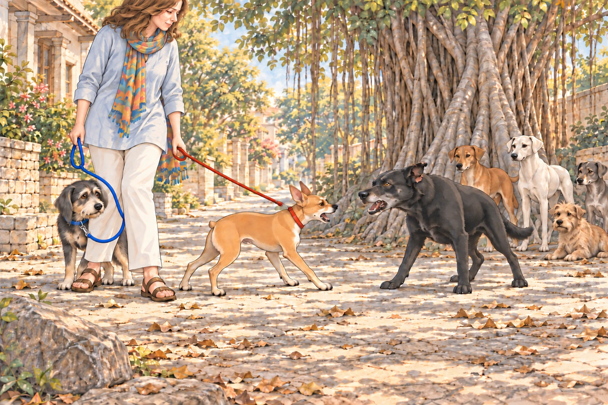
The black dog stepped forward, his growl deepening. “Who’s this tiny loudmouth?” his expression seemed to say. Heather shortened Buddy’s leash. He was looking at the smaller brown dog, whose tail had begun to move.
“Neet, stop it!” Heather pleaded, but just as she was about to pick him up, Neet’s leash slipped from her grip. The fiery chihuahua charged forward, barking ferociously.
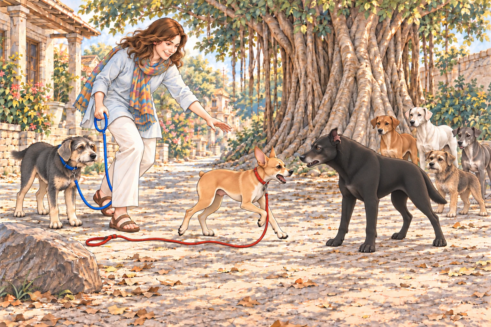
What happened next was not the battle Neet envisioned. The black dog, rather than attacking, tilted his head and barked—not a warning, but a laugh. The rest of the gang joined in, their tails wagging as they realized this tiny creature was no threat, just hilariously overconfident.
Neet, undeterred by their laughter, squared up to the black dog. “State your business, stranger! I’m in charge here!” his high-pitched yaps declared.
The black dog sat down, amused. “Relax, buddy,” his body language seemed to say. “We’re locals, not invaders.”
Neet looked past him at the excellent patch of shade. This was an awkward place to have declared a war; he had rather hoped to sit in it.
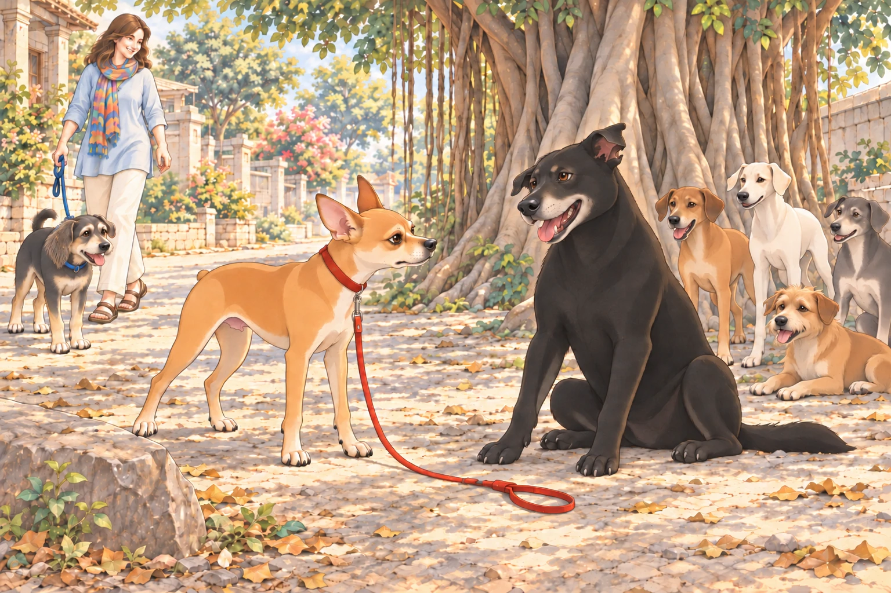
Buddy waited for the smaller brown dog to come closer, then stepped forward to meet her. They sniffed noses. Neither needed a speech. Heather watched in relief as the tension began to dissolve. She retrieved Neet’s trailing leash and wound its loop securely around her hand.
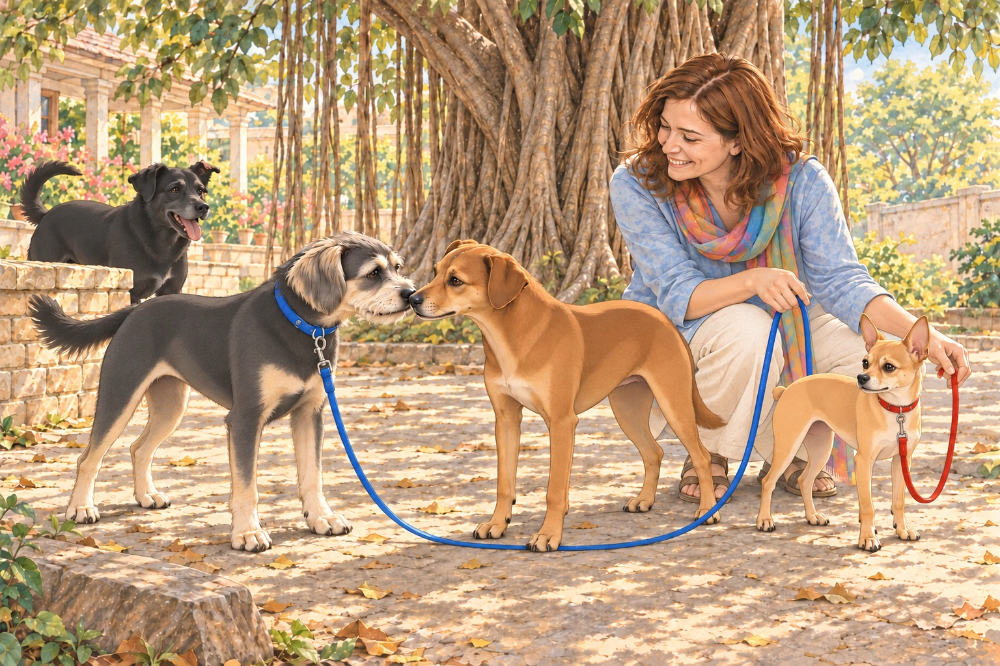
“Very successful walk,” she murmured. “We’ve crossed the street.”
The black dog—whom Heather decided to name Shadow—nudged Neet playfully. Despite his initial bravado, Neet hesitated, unsure of how to respond. Shadow barked softly, as if inviting him to join their group.
Neet puffed up his chest again. “Fine,” he seemed to say. “You’re lucky I’m feeling generous.”
The gang of dogs quickly warmed up to Neet and Buddy. They led the pair on a tour of their turf, showing them hidden corners of the neighborhood where they could find the best scraps of food and cool spots to rest. Heather followed with both leashes loose enough for investigation.
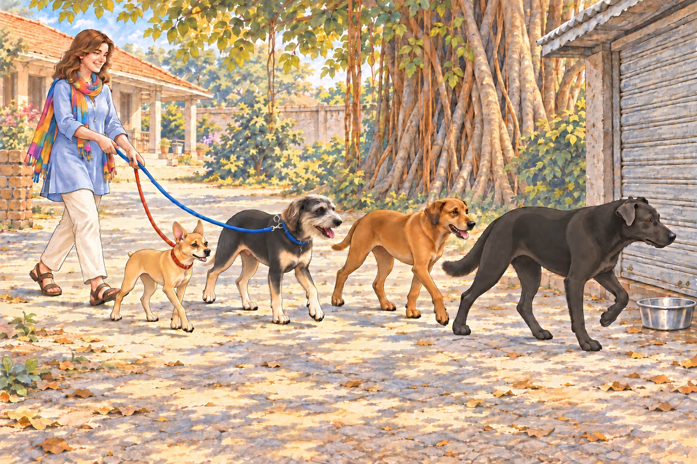
At the back of a shuttered stall, Shadow stopped beside a water bowl. Neet planted himself in front of it and inspected the alley. The scrappy terrier walked around him and drank.
“Supplies must be protected,” Neet informed him.
The terrier paused, water dripping from his chin. “From what?”
Neet looked into the bowl. There had been more in it before this conversation.
Buddy drank next. The brown dog waited beside him, then led him back to the banyan tree. He liked her tour. It had returned to the best place very quickly.
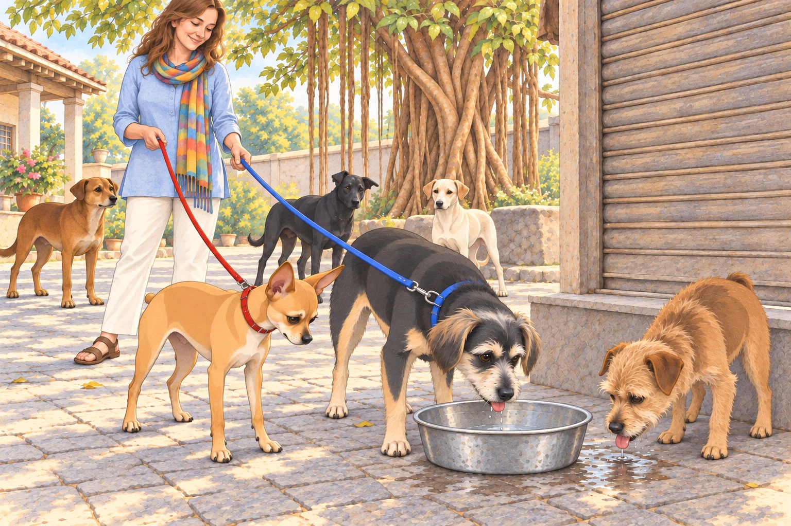
Neet, however, saw an opportunity.
“Alright, listen up!” Neet barked, climbing onto a low, stable pile of bricks to address the group. Heather moved closer so his leash stayed slack. “This neighborhood needs order, and I’m just the dog to bring it. From now on, we’re a team. A gang. And our mission is simple: protect this turf from outsiders and secure the best food for all of us!”
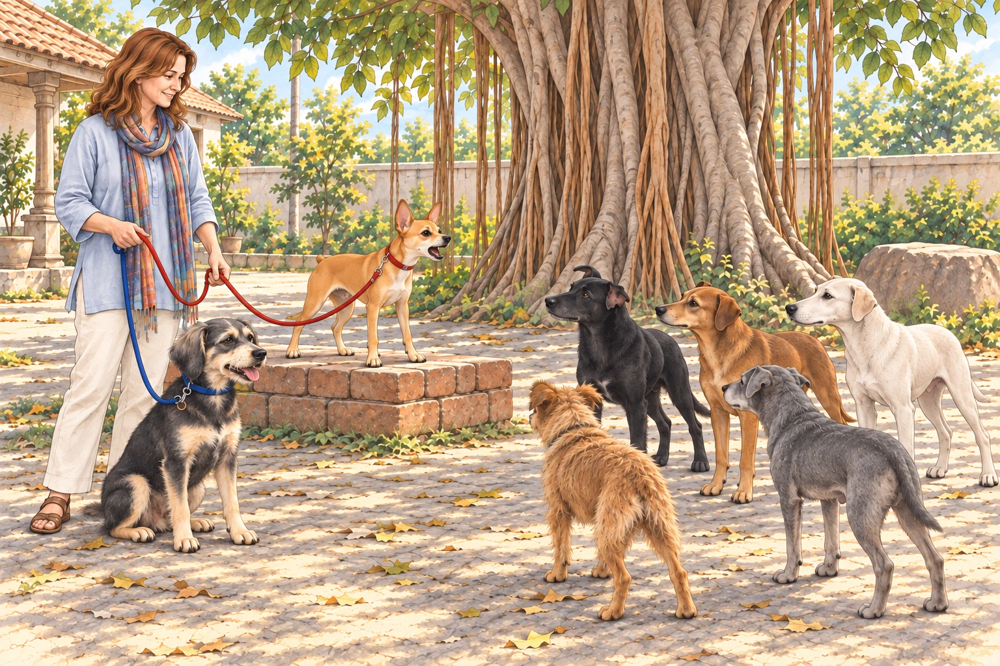
Shadow wagged his tail in agreement, clearly entertained by Neet’s fiery leadership. The others barked their approval, forming a loose circle around their new “general.” At the word “food,” the scrappy terrier had opened both eyes.
Neet immediately began issuing commands. “You,” he barked at a lanky white dog, “patrol the north wall. And you,” he directed his sharp little muzzle toward the brown dog Buddy had befriended, “scout the market for scraps. Report back at dusk!”
Buddy watched the brown dog settle down again halfway through her assignment. He lay beside her.
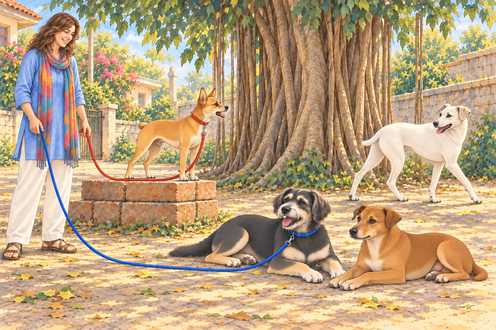
“Report back at dusk,” Neet repeated.
“We’ll be easy to find,” Buddy said.
The lanky white dog walked to the north wall, discovered that its shade had moved, and walked back. Neet watched this first patrol return with impressive speed.
Heather, observing from beside the bricks, couldn’t help but laugh. “Only Neet could turn a casual walk into a military operation,” she muttered.
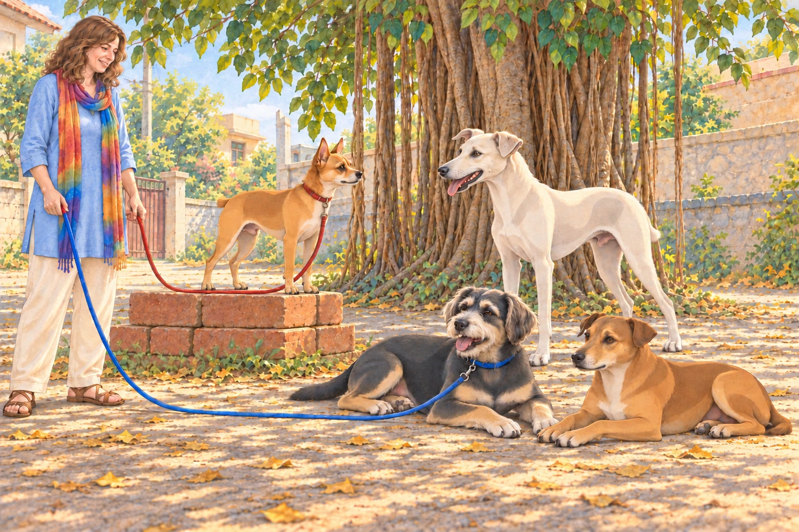
As the days went by, the gang’s activities became the talk of the neighborhood. Residents began leaving extra scraps for the dogs, amused by their antics. On later visits Heather unclipped their leashes beside the tree and folded them over her wrist; the dogs stayed within sight of her porch. Neet took his role seriously, leading patrols, organizing food runs, and barking orders with the zeal of a true leader. Buddy wanted supper to be as peaceful as the naps afterward. He appointed himself to the part before the naps.
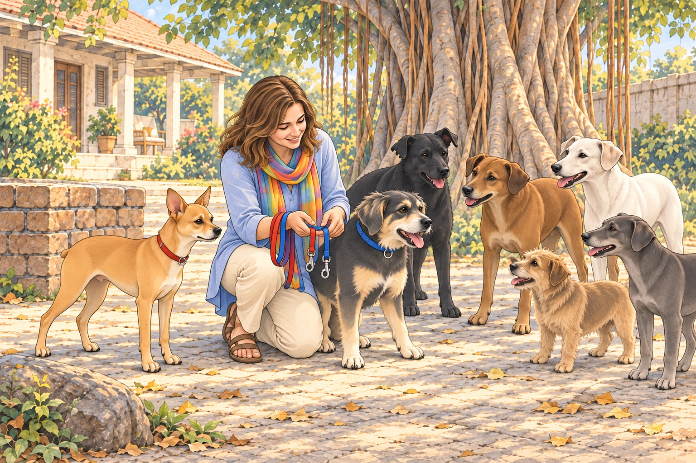
His first attempt at arranging a fair food queue ended with everyone politely following him to the same scrap.
Buddy stopped. Shadow stopped behind him. The terrier put his nose between Buddy’s feet. The brown dog came around to see what they were all looking at.
“Single file,” Neet barked from his command rock.
They were. It was a very wide file.
The white dog edged closer, and Buddy hurriedly put a paw over the scrap. He had organized himself a place at the front. It was proving difficult to give it up.
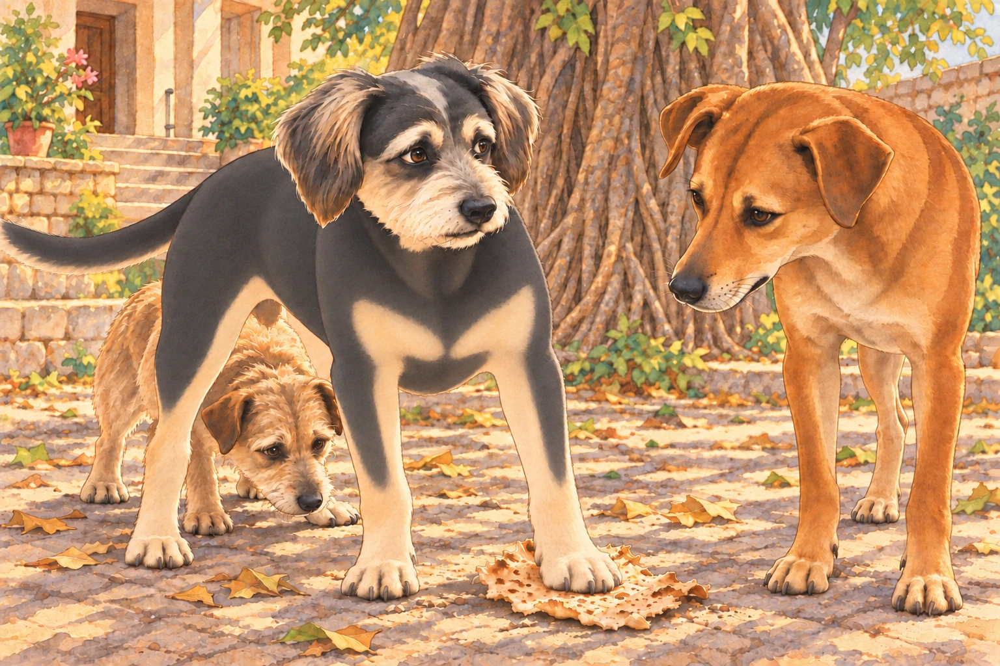
“Is that for everyone?” the brown dog asked.
Buddy looked down at his paw. He lifted it. The terrier ate the scrap.
Neet sprang from his rock to restore order. Everybody turned toward him, leaving the empty patch behind. Buddy remained beside it. His fair queue had produced one extremely satisfied dog.
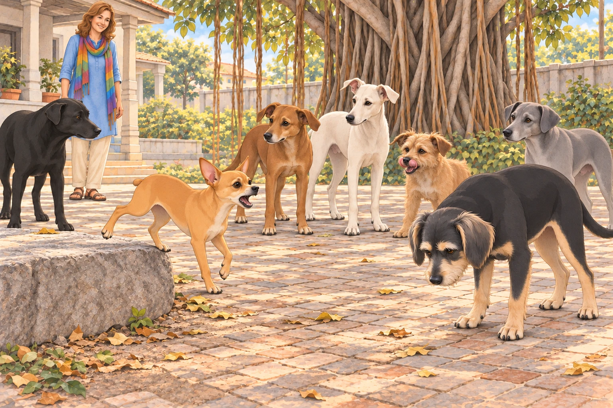
At the porch, Heather had watched the entire arrangement develop. She came across with a bowl of water and knelt on the clear side of the tree, her bright scarf gathered away from the dust. Buddy leaned briefly against her knee.
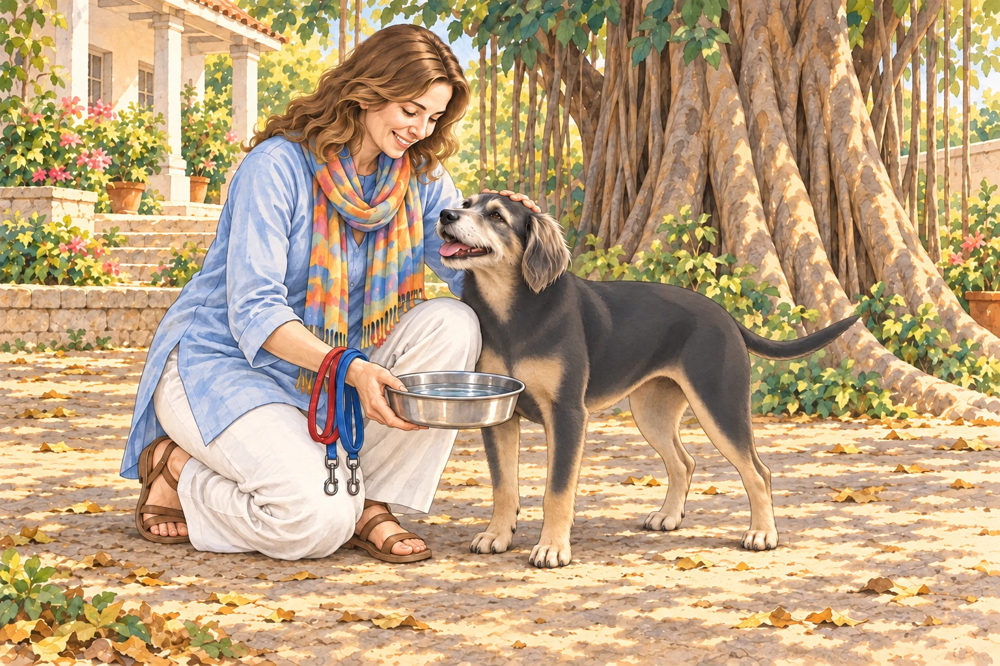
“Getting a bit crowded, sweetheart?” she asked, stroking his head. Then she set down the bowl where there was room to approach it.
The residents’ next offering arrived in a broad tray. This time Buddy waited until it touched the ground. Instead of calling everyone to one spot, he walked around the tree to where the brown dog had settled. Shadow followed. The white dog stayed near the tray, and the terrier investigated the far edge.
Neet stood between Buddy and the tray.
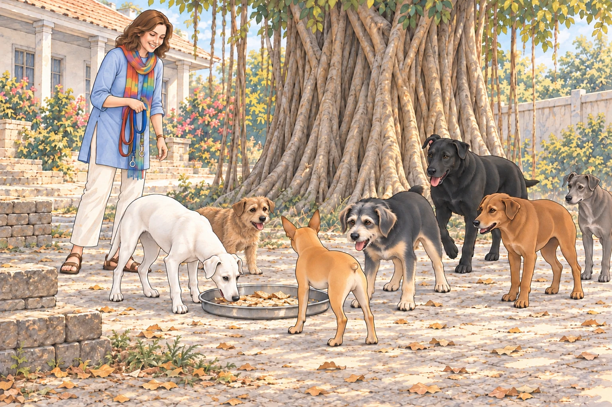
“Where are you going? Supper’s here.”
Buddy looked from the tray to the little spaces around the tree.
“Could supper be there too?”
Heather broke the larger pieces into several small portions. Buddy’s hopeful journeys between her hand and the open spaces made the destinations fairly clear. Soon there was room for seven noses without anyone having to put one underneath somebody else.
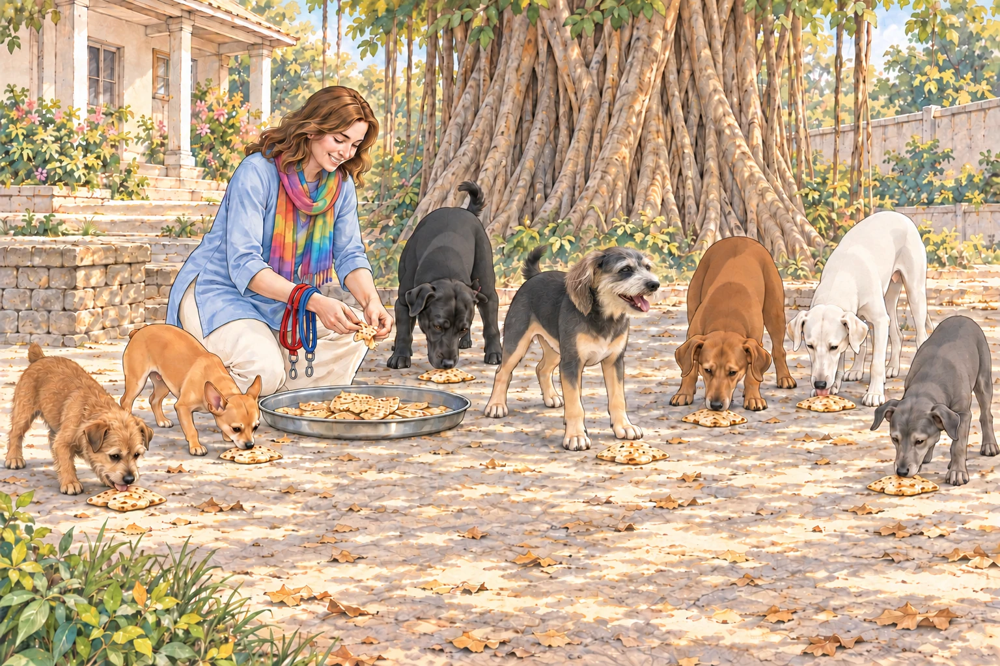
Buddy carried his own piece to the brown dog. She shifted over. He ate beside her, pleased with himself, until Neet barked, “Now we need a guard.”
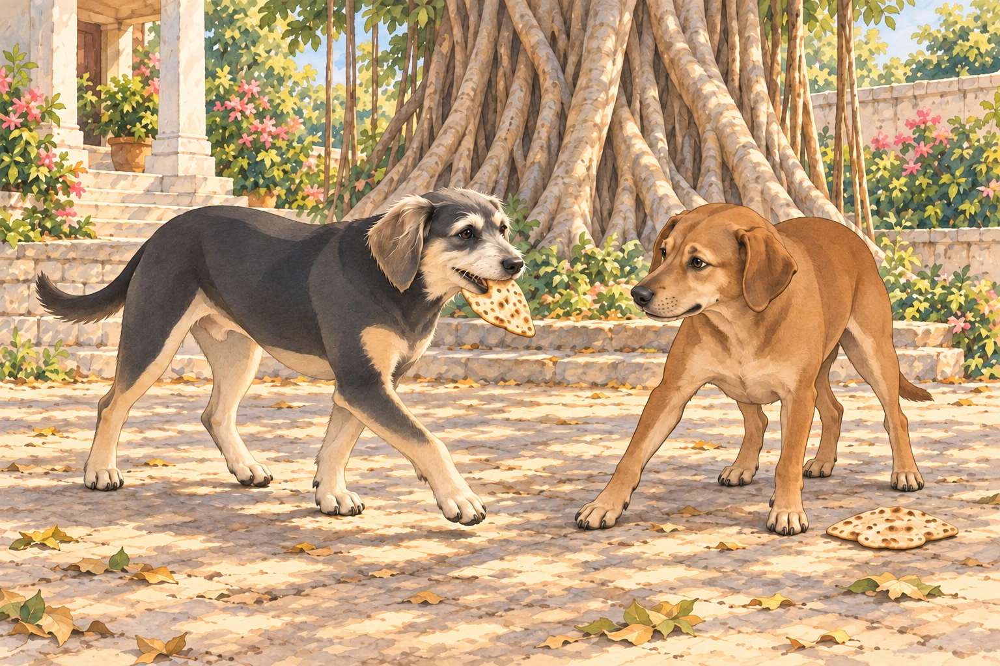
Every head lifted.
Neet looked around his team. Every dog had something worth guarding in front of him. He returned to the rock and watched them eat.
Buddy took another bite. It was a much better arrangement.
After supper, he chose a long stick from the roots. The brown dog caught the other end. Buddy tugged, surprised; she tugged back, delighted. They circled each other until Shadow had to lift a paw out of their way. Heather laughed, and Buddy pulled harder. For once, Neet’s orders were the least interesting sounds beneath the tree.
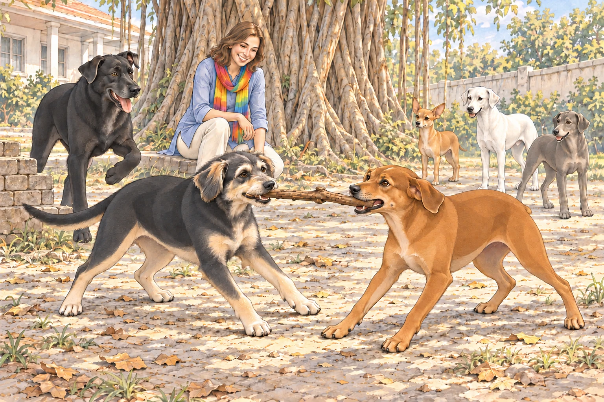
The stick snapped. Buddy staggered backward with half of it. The brown dog stood triumphantly with the other half, and then both dogs hurried to inspect each other’s prize. Buddy decided his was better. Hers still had bark on it, though. He checked again.
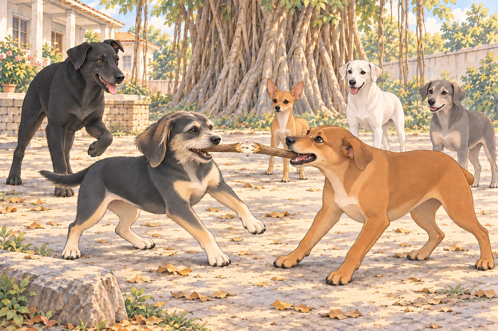
One afternoon, when the residents had begun setting out several little piles without help, an unfamiliar dog wandered into their territory. Neet’s ears shot up, and he sprang into action. “Intruder alert!” he barked, rallying the gang. Shadow and the others formed a protective line, with Neet at the front, growling fiercely.
The outsider, a shaggy golden retriever, stopped just beyond the tree’s shade. He looked bewildered. There was an untouched portion behind Neet, and seven dogs in front of it.
Neet planted his forepaws wide and turned his head to check that Shadow was holding the line. He was. Buddy wasn’t. Buddy had stepped sideways to look past them.
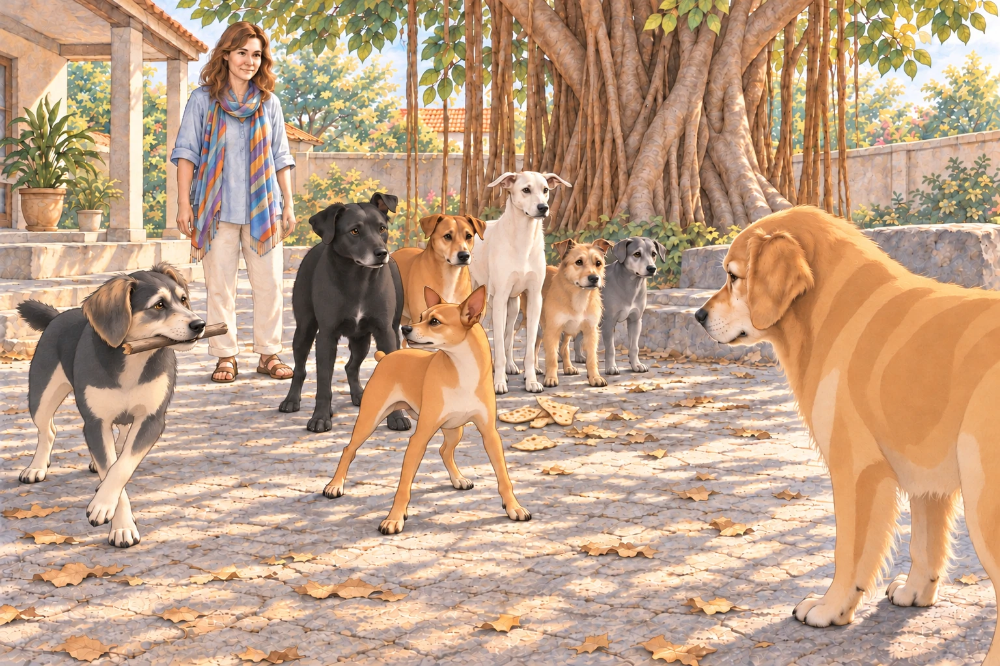
“Position, Buddy!”
Buddy hesitated. He remembered standing behind Heather when Shadow had looked enormous. The retriever was looking at all of them in much the same way.
Buddy put down his stick and approached him with his usual calm demeanor. After a brief sniff, Buddy wagged his tail, signaling that the retriever meant no harm. Neet, though reluctant, stood down, but not without a stern warning bark.
The retriever wagged at him too. Neet held his severe expression a moment longer, in case it was still required.
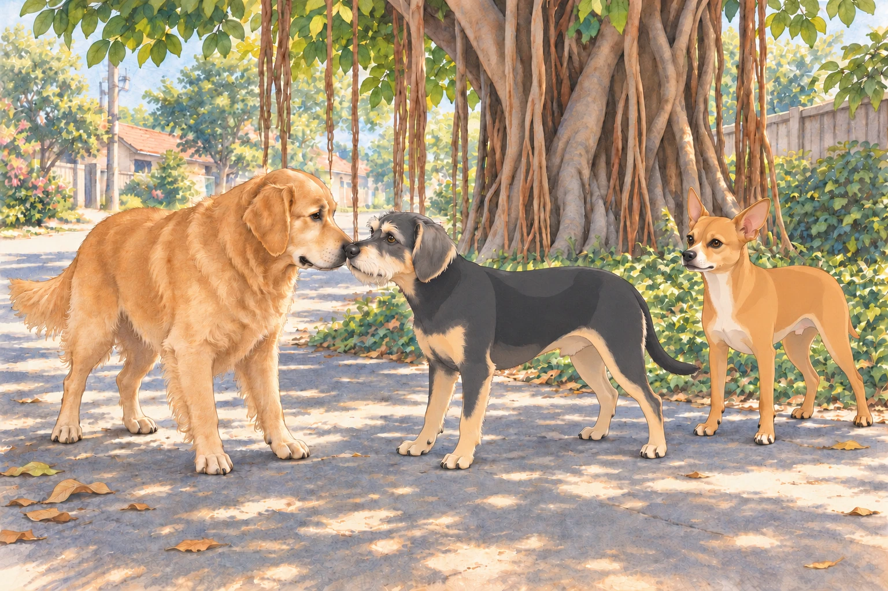
Buddy led the newcomer toward the untouched portion. Neet stepped in front of it.
“That’s mine.”
Buddy stopped. He had solved the stranger part before considering the supper part.
The retriever sat down. He made no attempt to pass Neet. His eyes moved toward the food and carefully away again.
Buddy went back to his own portion and nudged a piece free. It took two pushes; he nearly ate it on the second. Instead, he brought it to the retriever and put it down.
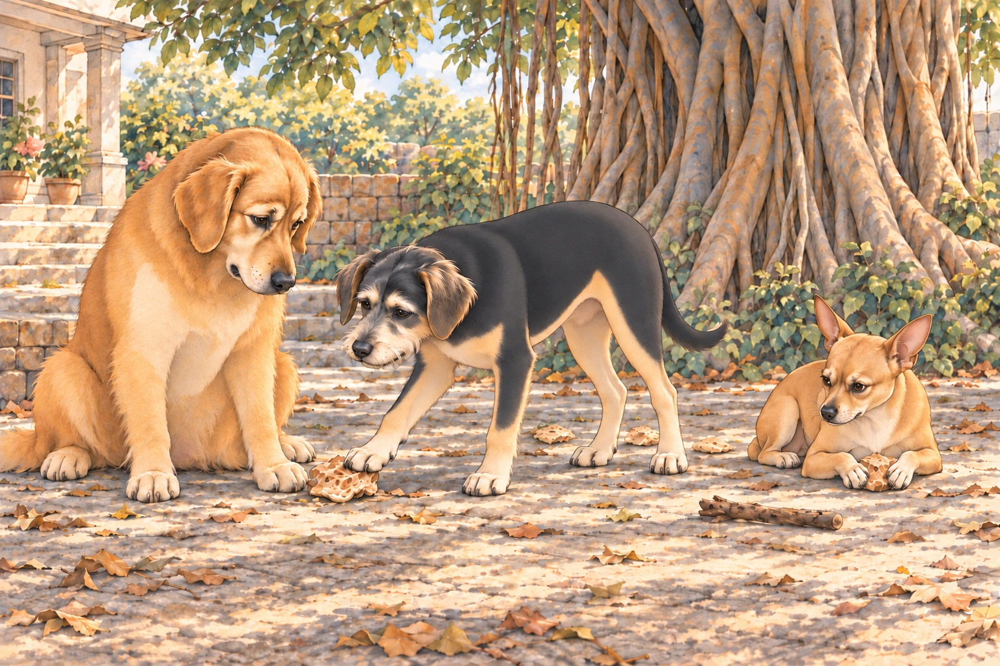
Neet watched the piece disappear. Then he looked at the space beneath the banyan tree. Shadow had already moved back to his usual place. The white dog was drinking. Nobody seemed to require a protective line anymore.
“Visitors must be supervised,” Neet announced.
He nosed a smaller piece out of his own portion and took it to a spot beside the retriever.
Buddy watched him eat it there.
“Very close supervision.”
Neet settled his ears into their most official position. The retriever lowered himself beside the piece Neet had left for him. He fitted into the shade without moving anybody out of it.
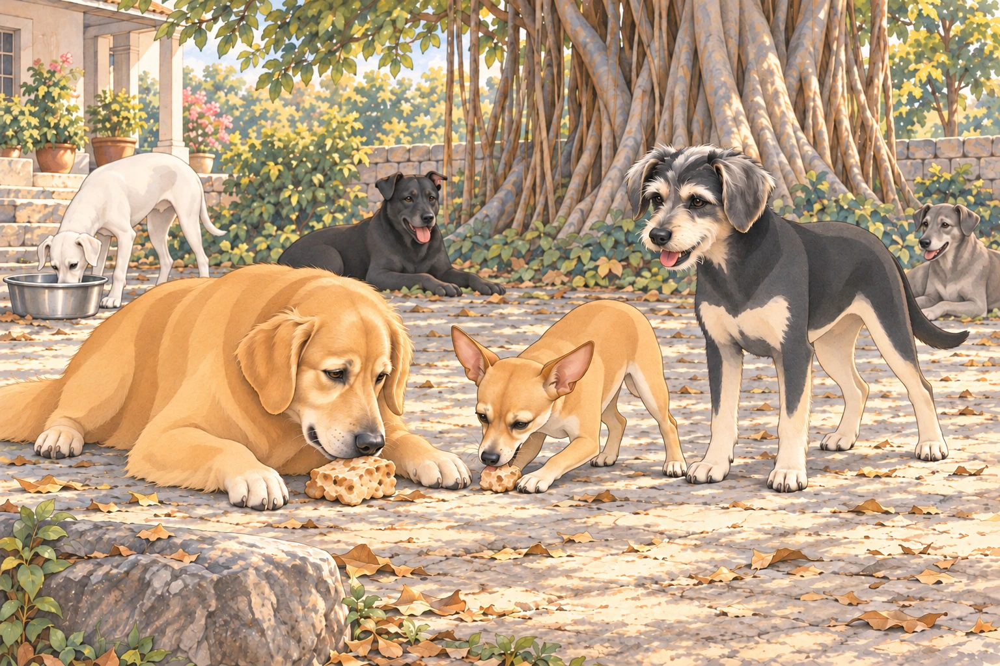
By sunset, the gang had settled into their usual routine, lounging near the banyan tree. Neet sat on his “command post”—a large rock—surveying his domain with pride. Buddy lay nearby, happily chewing on his half of the stick. The brown dog had brought hers too.
Heather watched from the porch, a cup warm between her hands. “Inspection finished?” she asked Neet. He was still sitting on the rock.
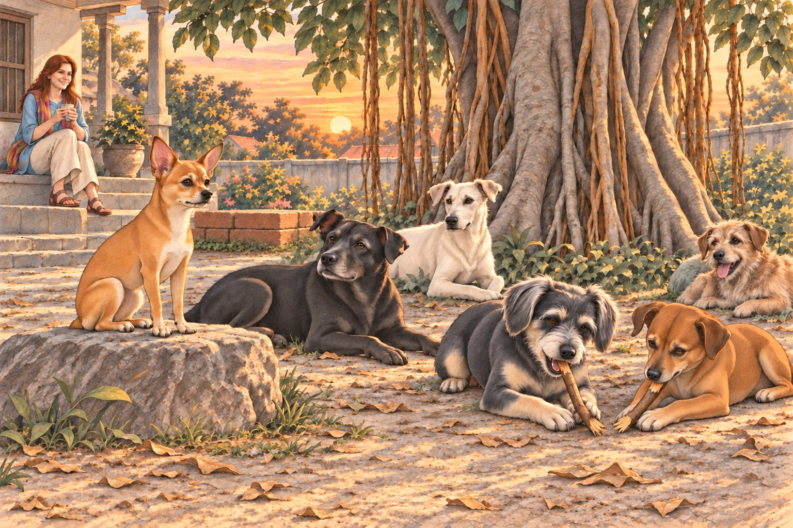
Shadow made room under the banyan tree. Neet descended from his command post to join him. Buddy kept chewing his stick. They had found a place for both kinds of dog.
“Everyone may rest,” Neet announced, lowering himself into the shade.
Nobody had to move.